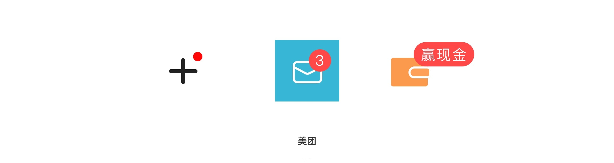
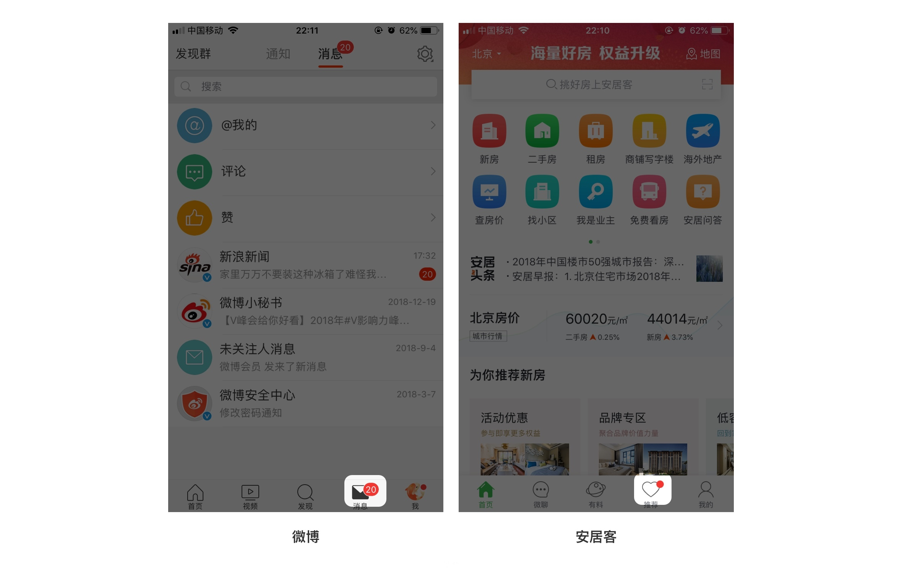
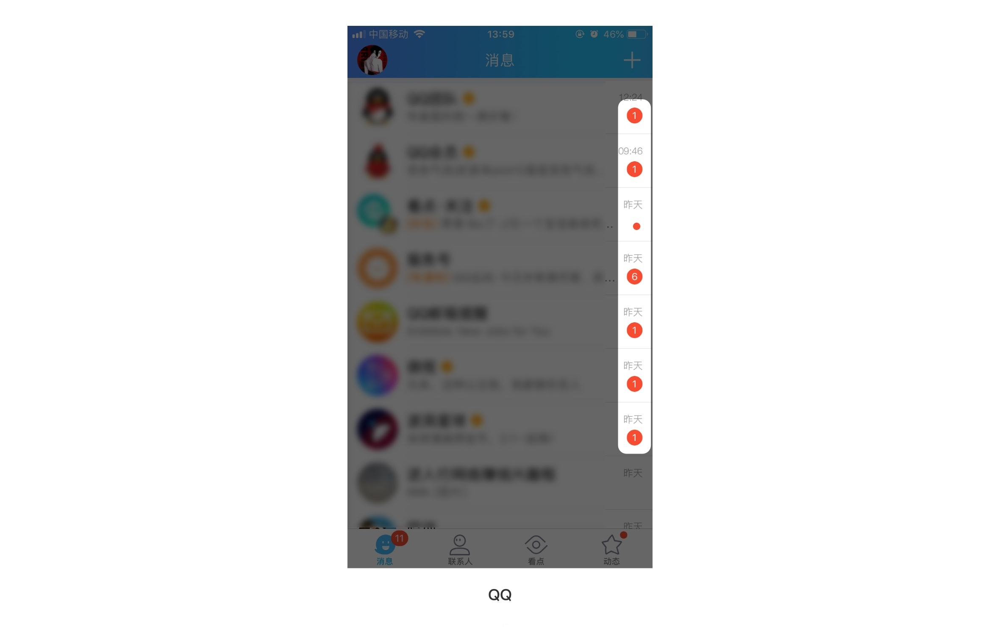
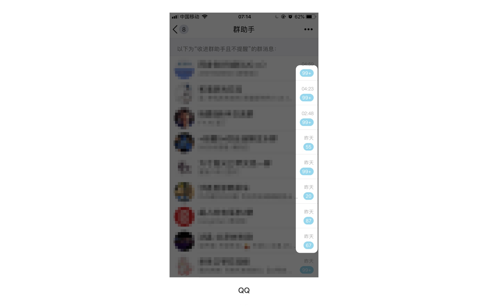
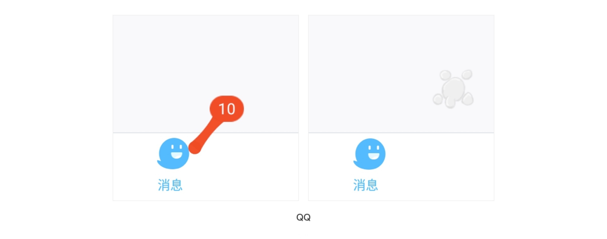
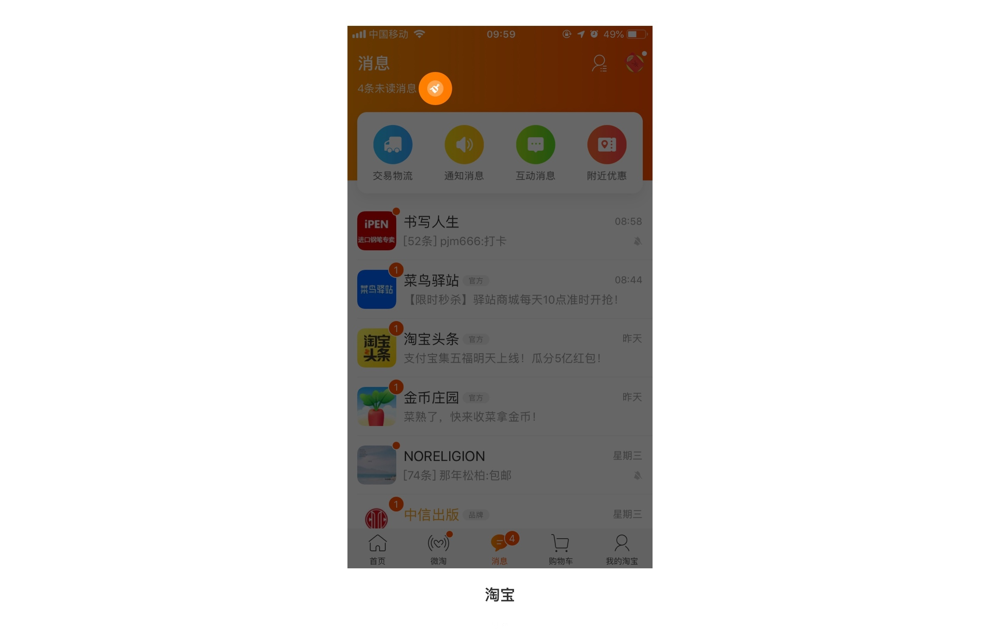
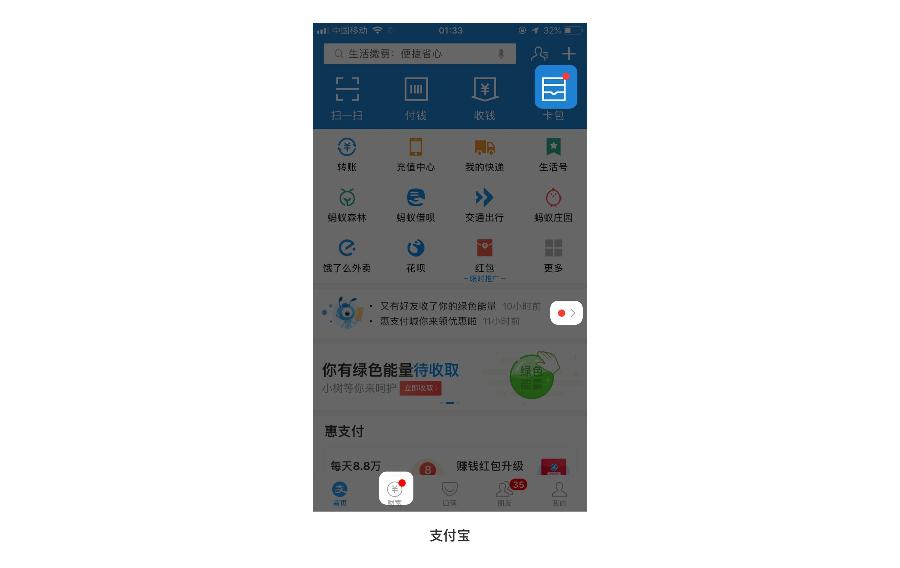
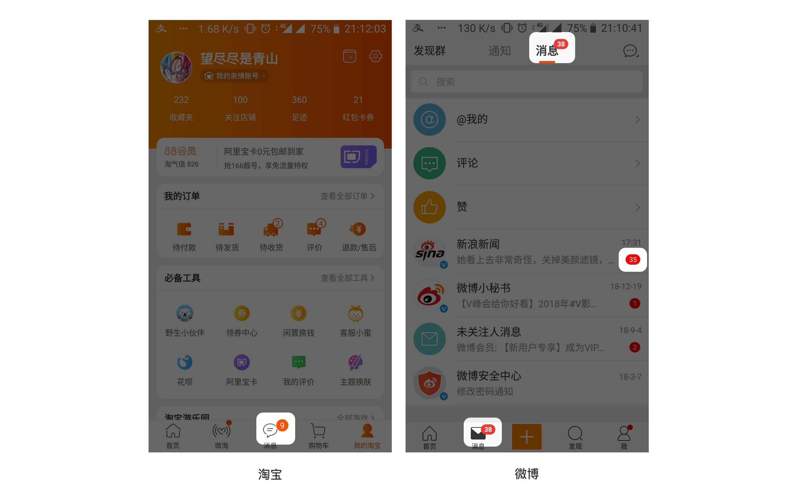
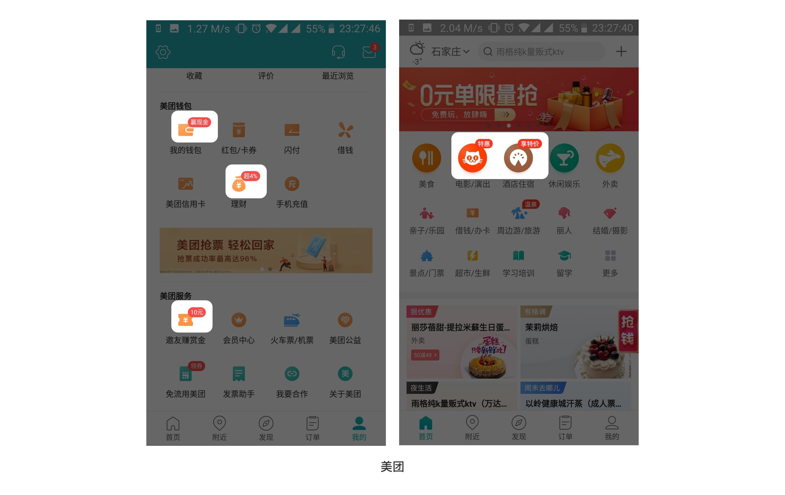
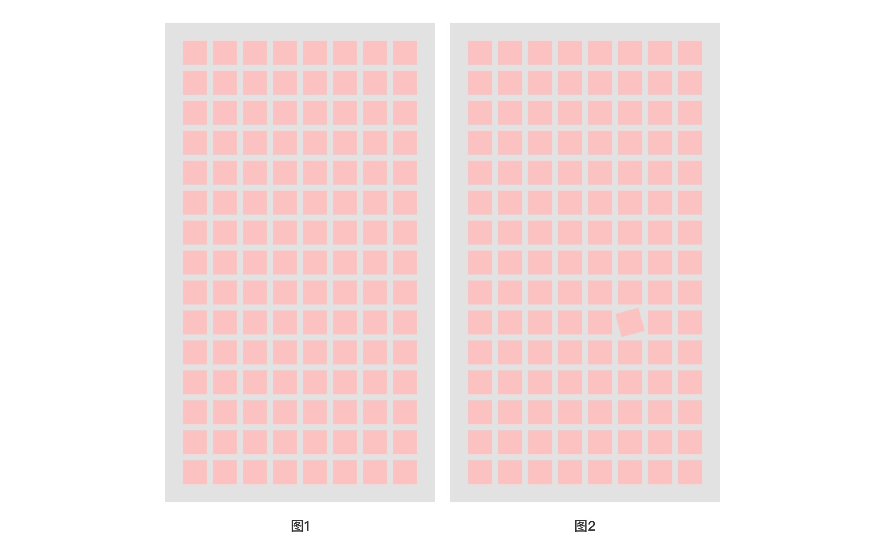

小红点的定义和作用是什么？有哪些视觉特点？常见样式有哪些？我们为什么这么想点击它呢？这篇文章就和大家分享一下关于小红点的设计。
（干货来了，前排小板凳准备好！）小红点是我们惯用的叫法，它正式的名称应该叫做徽标（Badge）。通常指出现在图标右上角的红色圆点或带数字和文字的红点，如下图：
它的主要作用有两个，一个是起到通知的作用，告诉用户有未读的消息或有未处理的任务；另一个是起到为入口导流的作用，引导用户点击进来，增加点击量，如下图：
以微博和安居客为例，微博页面中的小红点是为了通知用户有20条未读的消息，安居客页面中的小红点为了引导用户去看推荐的房源信息。
为什么常见的小红点都是红色?小红点怎么消除？下面主要阐述一下小红点在颜色及消除方法两方面的视觉特点。
1.颜色
小红点为了“逼迫”人们点击，通常会使用高明度+高纯度的红色，因为红色色彩感知强烈，而且有警告、危险的含义。更容易和页面形成强烈的对比，引起人们的注意。QQ中好友和系统的消息推送都使用了红色的小红点，如下图：
但有时候为了不过多干扰用户，也会使用色彩感知较弱的蓝色。比如QQ群助手里的消息推送就使用了浅蓝色的小红点。如下图：
2.消除方式
最常见的消除方式就是点击一下，小红点就消失了；或者是把最后层级的小红点点击完，上面层级的小红点才会消失。
而有的 APP 把这个过程做的非常有趣，如下图：
QQ消息入口的小红点可以被随意地拉伸，然后爆炸消失，用这种趣味的方式可以减轻用户的厌烦情绪。
最好能够为用户设置一个一键消除的按钮，这样可以大大减少用户的操作成本，如下图：
以淘宝为例，因为用户要和众多的商家沟通，再加上很多会员群或者系统消息的推送，消息通常会非常多，而一键清除只需要点击一次就可以消除所有的小红点，大大减少了操作成本。
常见的小红点有纯红点、数字+背景色、文字+背景色3种形式，它们都有各自对应的使用方法以及使用场景。
1.纯红点
这种形式常用在一些入口上面，引导用户点击进入更深的层级，是最常见的一种形式。如下图：
以支付宝为例，支付宝首页中出现的这些纯红点，目的就是为了让用户点击这些入口，把用户引入更深的层级。
2.数字+背景色
这种形式就是在纯红点的基础上加入了数字，主要用于消息通知的场景中，提醒用户有未读的消息并且可以向用户显示具体的数量。如下图：
以淘宝和微博为例，淘宝中的订单消息、微博的资讯消息，都使用了这种红点形式。其中淘宝的订单消息是用户想要看到的，而微博的资讯消息是系统自动推送给用户的，用户被动接收不想要的消息时，会产生厌烦心理。
3.文字+背景色
这种形式是在纯红点的基础上加入了文字，常用于运营活动的场景，文字内容通常是一些有较强吸引力的词句，为了吸引用户点击。
上图美团的页面中，就使用了了“赢现金”、“特惠”、“享特价”、“领券”等特别具有诱惑力的词来吸引用户点击。
以上就是小红点常见的三种形式，但是在实际项目中会涉及到多个层级和多个入口，所以一般都是多种样式的小红点组合起来使用。
这里涉及到了“知觉流畅性”，我很喜欢科学家种太阳在果壳问答中的观点，以下是原文摘要：
为什么人脑会在加工信息时，在知觉层面上，刻意追求对信息的合理简化？因为外界信息太多，大脑分分钟过载崩溃，所以需要牺牲大量的噪音信息，把其中有意义的好理解的能记住的，筛选出来，然后作为知觉加工的产出。这是人脑在漫长的进化过程中逐渐习得的一种认知习惯。
为什么人类也会“喜欢”那些本来就整齐划一从而容易被大脑组织加工的东西呢？
因为知觉流畅性。知觉流畅性涉及个体对刺激较低水平的加工，反映了个体对知觉外部信息难易程度的主观感受。它本身并不是一种认知操作，只是一种有关认知操作的感受。比如，看到杂乱无章的房间，有的人就会觉得头很大，而看到收拾得井井有条的房间，可能就舒服多了。
简单来说，就是人类的大脑在处理整齐划一的事物时，因为消耗的能量比较少，所以感觉很流畅，就会产生愉悦感，如下图：
图1中所有的矩形都整齐划一的排列，我们在浏览的时候很流畅，但图2中有一个矩形角度发生了变化，当我们浏览到这个矩形时，大脑忽然停顿了，是不是特别想把它摆正？
同样的，小红点的出现就是打破了整体页面的流畅性，和页面形成特别强烈的对比，让人不得不把它点掉，以保持知觉的流畅性和大脑的愉悦感。
今天主要分享的一件事是 APP 中小红点的设计，我总结了五个点是：
1.小红点的主要作用：一个是起到通知的作用，另一个是起到为入口导流的作用。
2.通常会使用红色，这是因为红色色彩感知强烈，更容易和页面形成强烈的对比；如果想不过多干扰用户，可以使用色彩感知较弱的蓝色。
3.有趣的消除方法可以较少用户的厌烦心理，添加一键清除可以较少操作成本。
4.在实际项目中会涉及到多个层级和多个入口，一般都是多种样式的小红点组合起来使用。
5.小红点借用了人类大脑会对流畅的事物产生愉悦感的现象，打破页面流畅性，引起人们的注意而去点击。